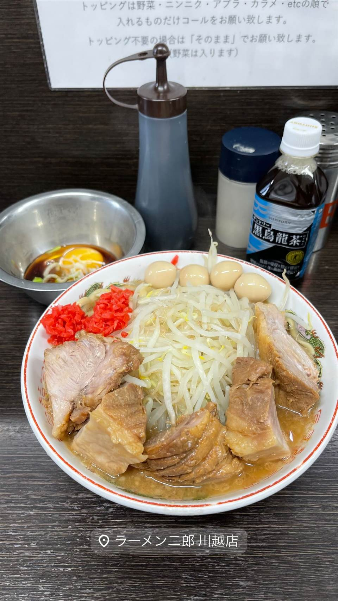
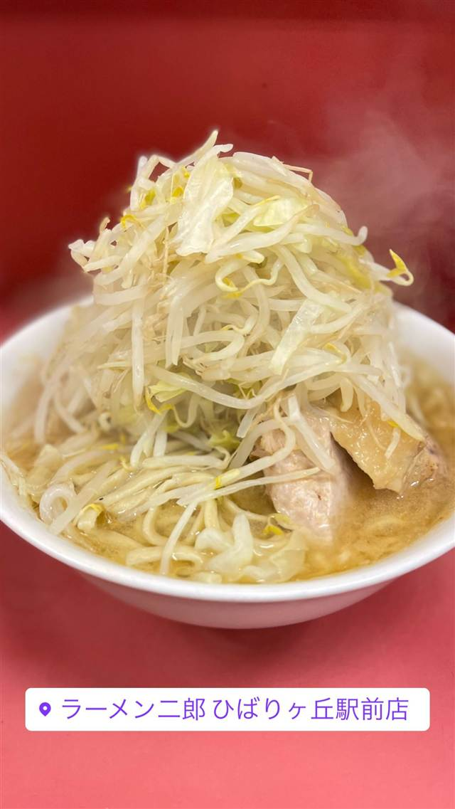
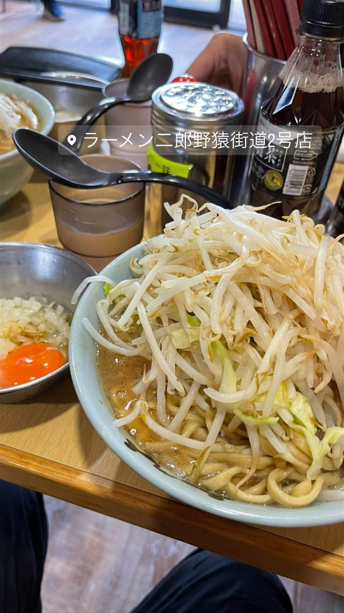
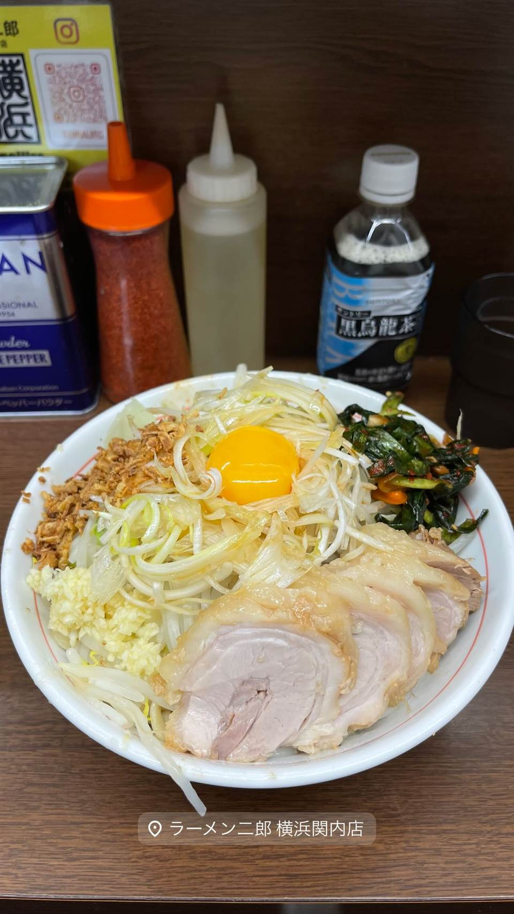
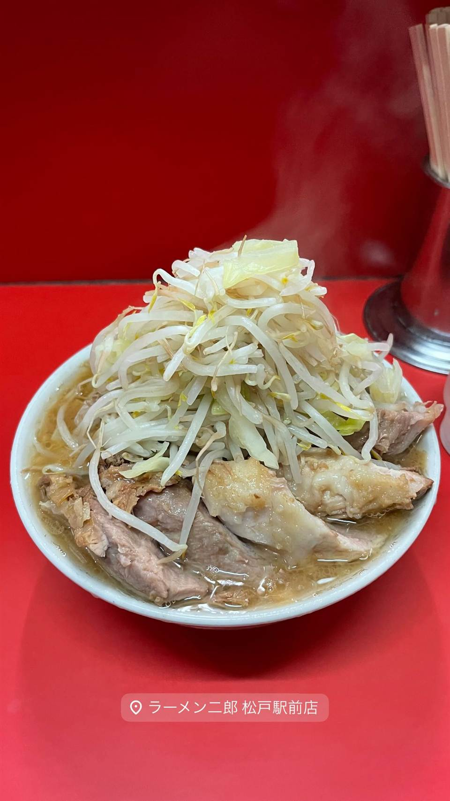
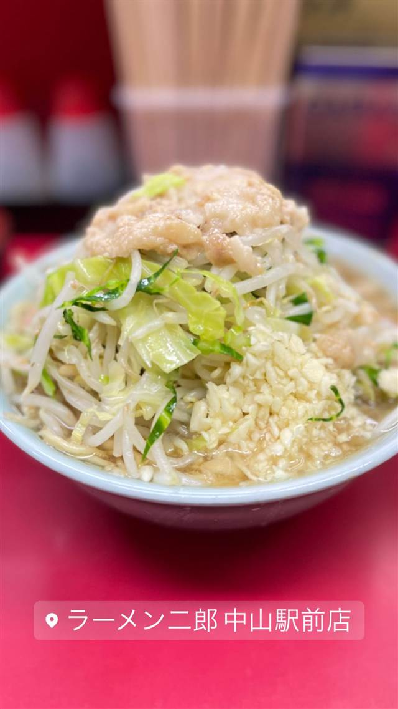

★ また行きたい二郎系(直系)で17位
ラーメン二郎 川越店
埼玉に3軒だけの直系二郎、店主は横浜関内店出身
ラーメン二郎 川越店
2017年3月、横浜関内店で修行した店主により開店した直系のラーメン二郎。三田本店から続く「直系」の系譜に連なり、埼玉県内では数少ない直系店の一つとして連日行列ができる。
TRIVIA
豆知識
- 埼玉県内の直系ラーメン二郎はわずか3店舗のうちの1軒
- 店主は人気店・横浜関内店出身
REVIEWS
世間の評判
96ラーメンDB3.73食べログ
味噌変更など幅広いカスタムと通し営業
- 味噌に変更できるなど二郎系には珍しいカスタムメニューが評価されている
- 通し営業のため時間帯を気にせず訪れやすい点を評価する声がある
- ほぐし豚の有無などロットによって味の濃さにばらつきがあるという声もある
ラーメンデータベース 口コミ749件・総合215位・最新 2026-09
| 創業 | 2017年3月開店 |
|---|---|
| 系譜 | 三田本店から続く「直系」の一店。店主はラーメン二郎 横浜関内店出身。 |
| 看板 | 二郎ラーメン（豚入り・ヤサイ・ニンニク等コール可） |
| どこから | 東京から1時間ほど |
| 行くなら | 行列 |
| 予算 | 昼 ～¥999 夜 ～¥999 |
| 定休日 | 月曜 |
| 場所 | 川越 埼玉県川越市旭町1-4-15 |
| メモ | 行列必至・コール制、埼玉県内では3店舗しかない直系二郎の1軒、カウンター12席、月曜定休。 |
食べたもの：二郎ラーメン
NEARBY
近い店・同じ系統の店
-

★ 二郎系(直系) ひばりヶ丘 ラーメン二郎 ひばりヶ丘駅前店 笑顔の店主が迎える、二郎初心者にも入りやすい直系店 昼 ～¥999 夜 ～¥999 -

★ 二郎系(直系) 京王堀之内駅 ラーメン二郎 八王子野猿街道店2 父も二郎系店主だった、父子二代にわたる直系二郎 昼 ~¥999 夜 ~¥999 -

★ 二郎系(直系) 伊勢佐木長者町駅 ラーメン二郎 横浜関内店 二郎の「汁なし」を早くから始めた発祥格の直系店 昼 ～¥999 夜 ～¥999 -

★ 二郎系(直系) 松戸 ラーメン二郎 松戸駅前店 元は「ラーメンショップ」だった店が二郎に転換、三代続く味 昼 ～¥999 夜 ～¥999 -
 ★
二郎系(直系) 神保町
ラーメン二郎 神田神保町店
三田本店直系の乳化系濃厚豚骨醤油が自慢の二郎ラーメン
昼 ¥1,000～¥1,999
★
二郎系(直系) 神保町
ラーメン二郎 神田神保町店
三田本店直系の乳化系濃厚豚骨醤油が自慢の二郎ラーメン
昼 ¥1,000～¥1,999
-

★ 二郎系(直系) 中山駅 ラーメン二郎 中山駅前店 非乳化スープと柔らかめの極太麺「デロ麺」が名物の二郎直系 昼 ¥1,000～¥1,999 夜 ¥1,000～¥1,999